Brief
Research identifies a domestic need for plant care that is easier to access, monitor, and integrate into everyday furniture.
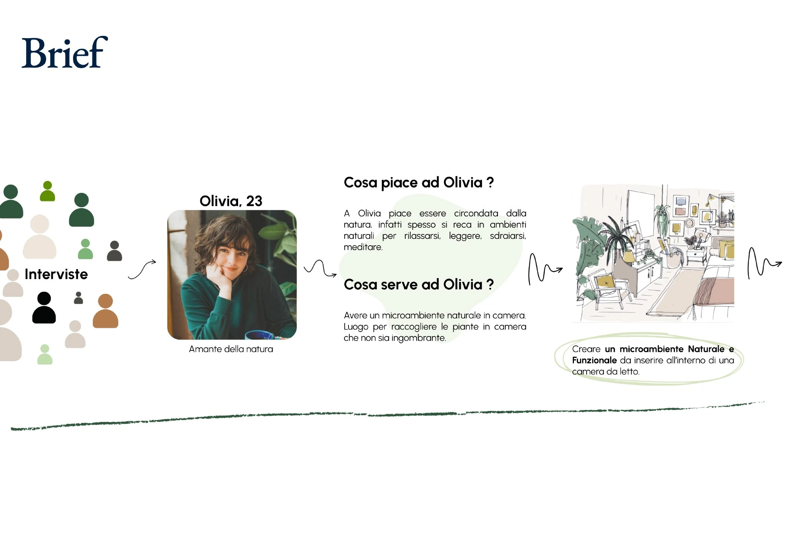
Furniture Product System / Indoor Gardening / Sustainability
A furniture product system concept that integrates plant care, storage, and everyday domestic use into a compact vertical structure for indoor gardening.
Press and drag to rotate the model.
Case Study
Brief

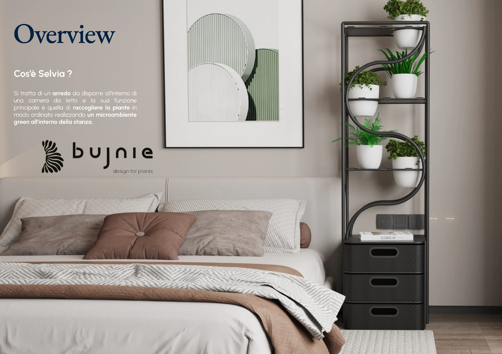
Function
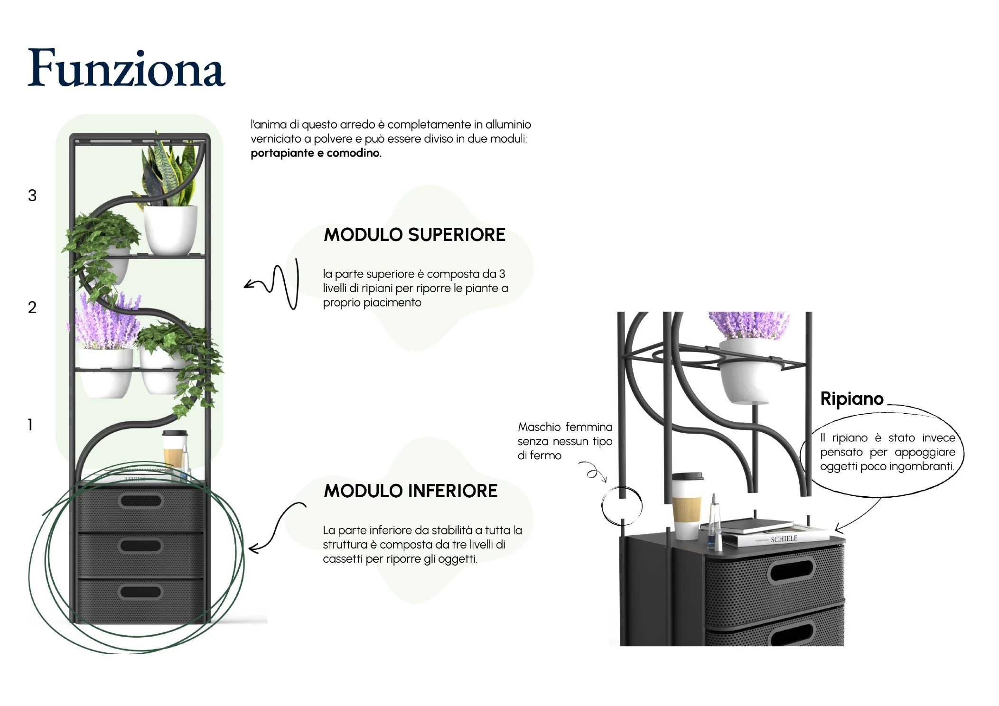
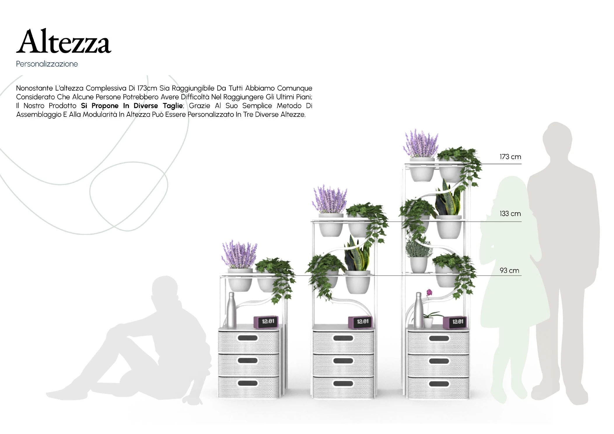
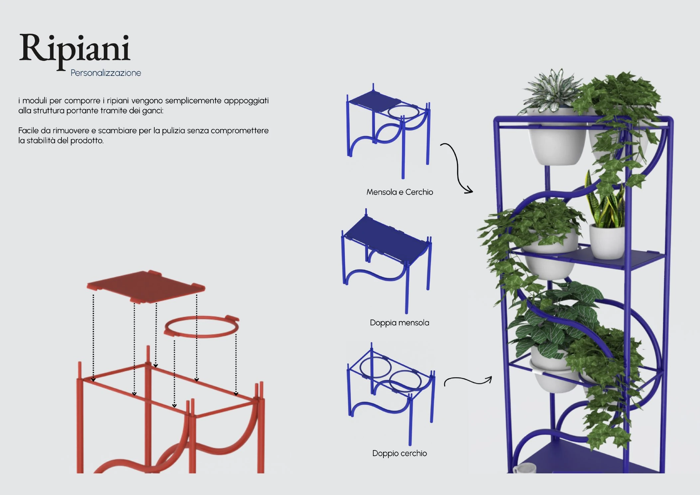
Plant Benefits
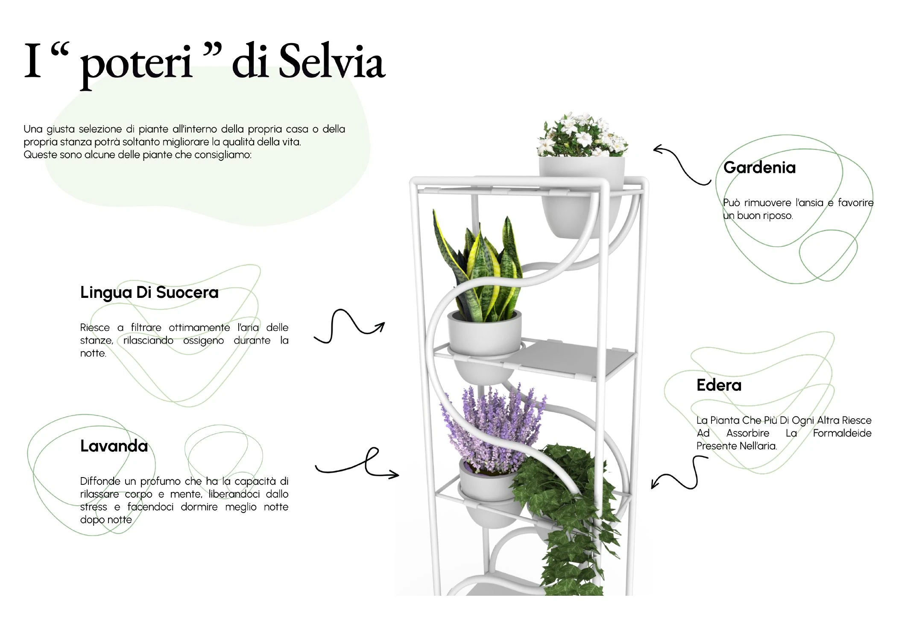
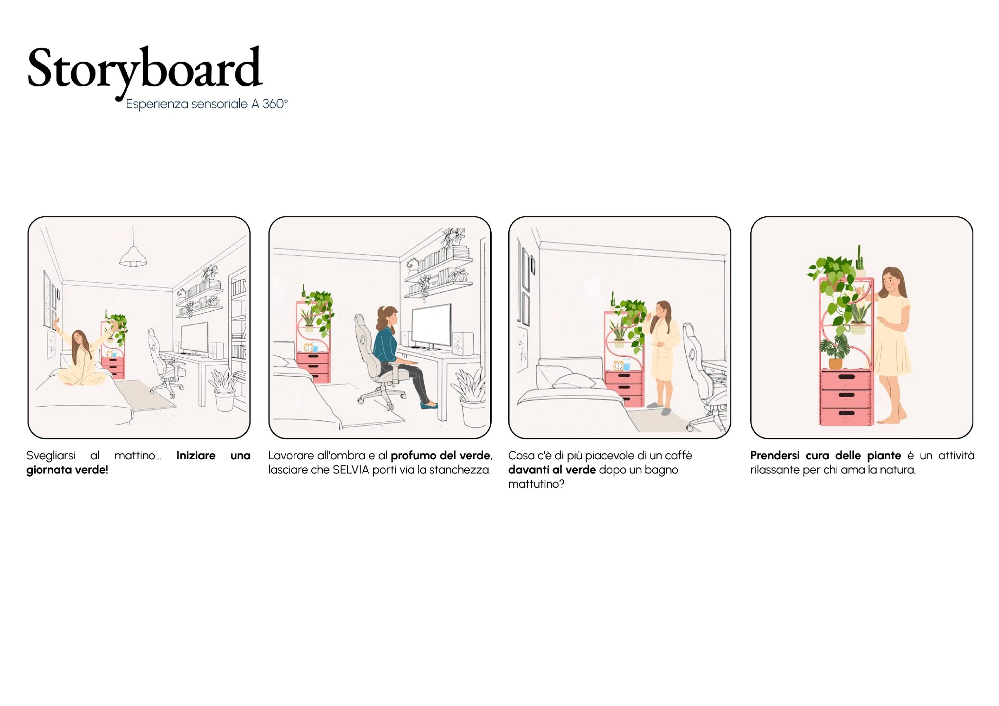
Assembly & Components
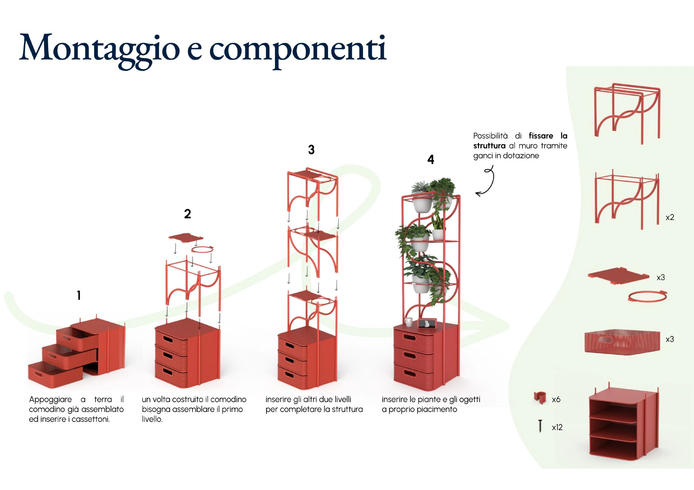
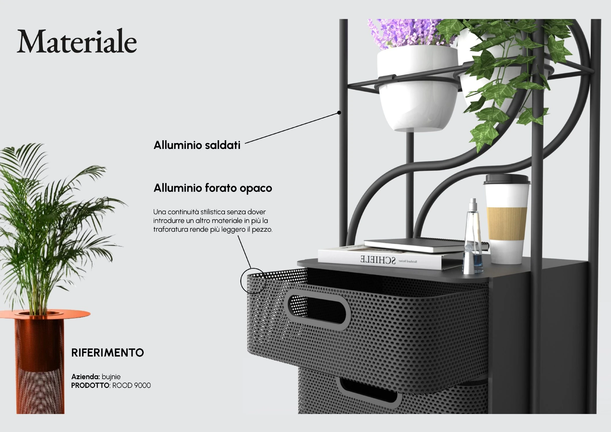
In-Context Renderings
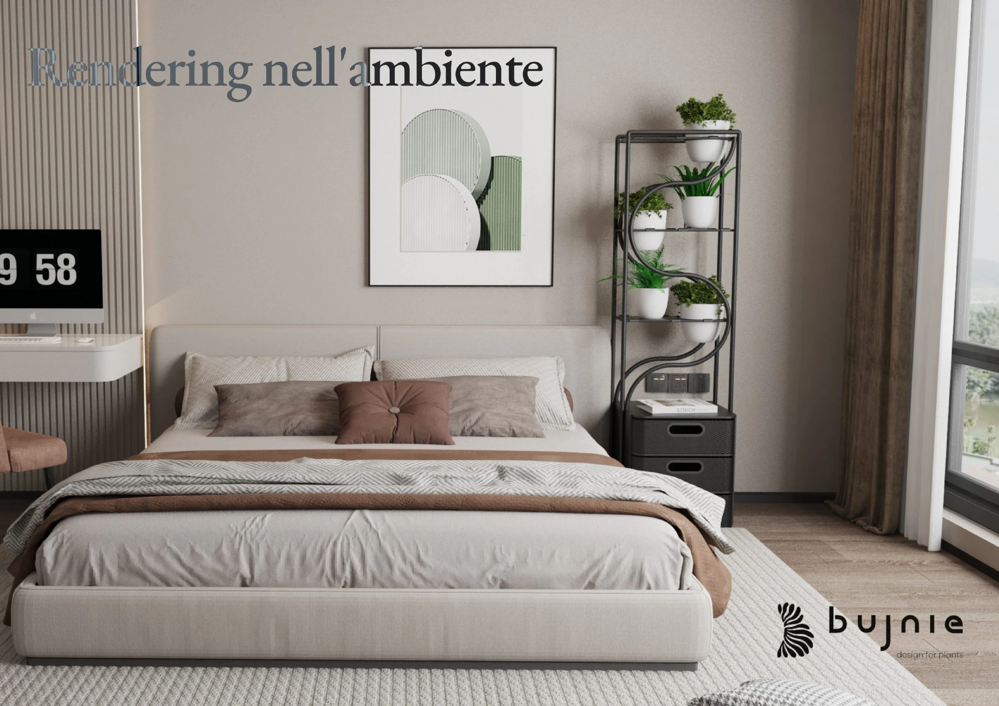
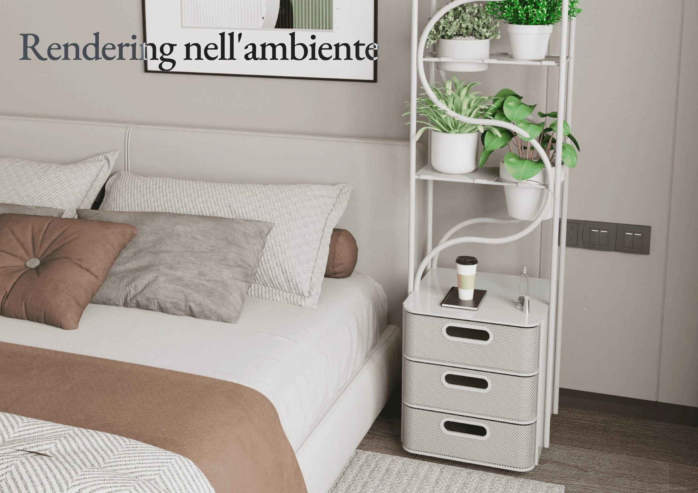
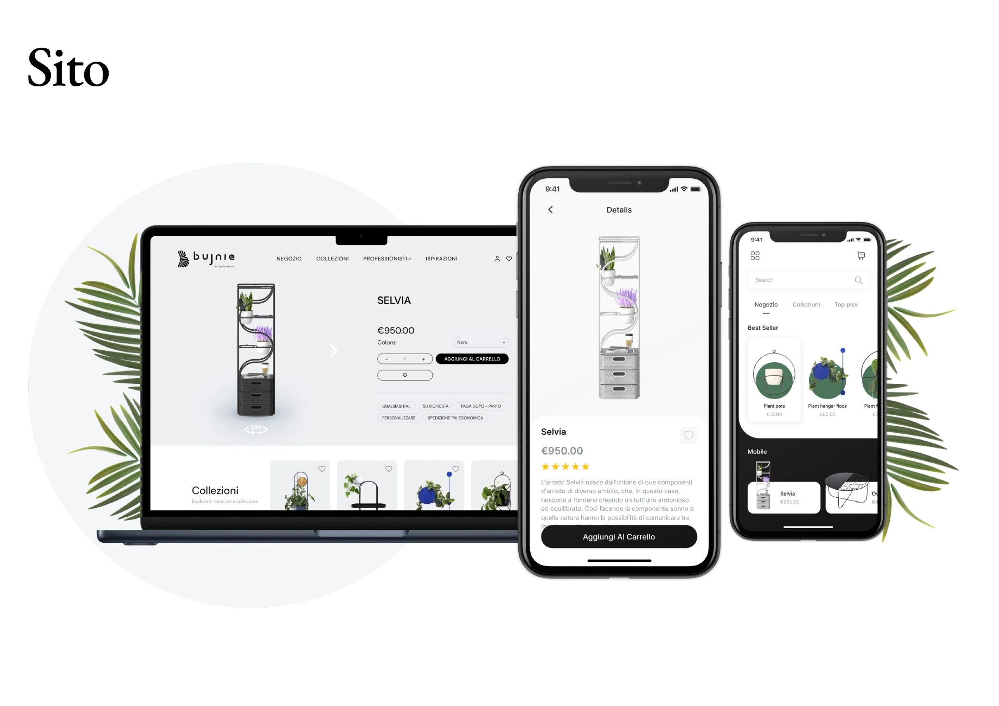
Study Models
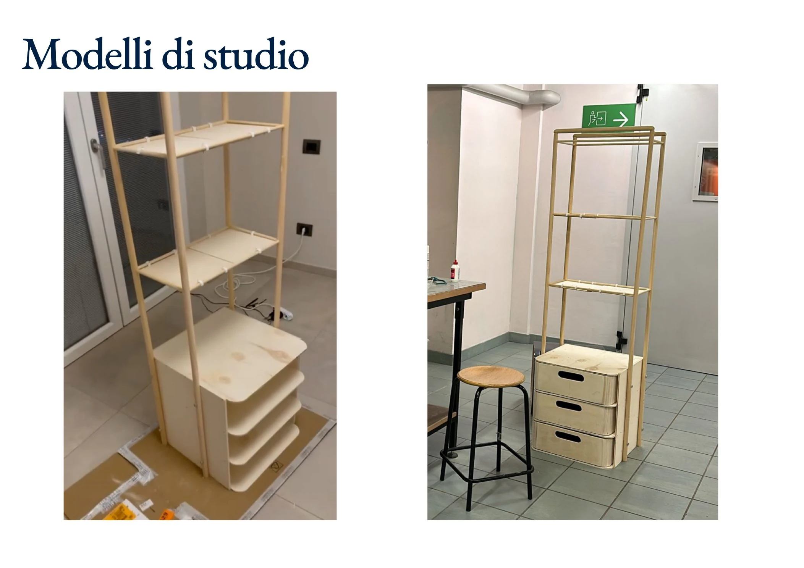